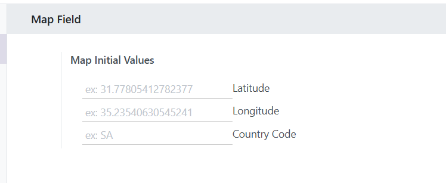

A powerful and flexible map field widget
The Map Field module provides a powerful and intuitive way to store and display geographical locations in your Odoo applications. This field allows users to select locations on an interactive map, search for addresses, get their current location, and more - all without requiring any external API keys.
Built-in search functionality allows users to find addresses and locations quickly without leaving the form.
One-click button to automatically detect and set the user's current geographical location.
Set default location coordinates and country code in the settings for a better user experience.
Uses OpenStreetMap for map rendering without requiring any external API keys.
Click anywhere on the map to set a location marker and automatically save the coordinates.
Restrict location searches to specific countries for more relevant results.
Configure you default location
Configure you default country code (For search)
Email: amt.dev.code@gmail.com